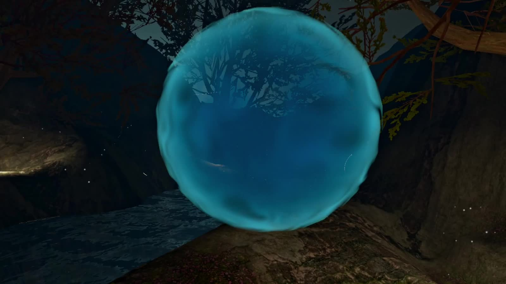

TrailerXR · WELLBEING
ProfessionalFeb 2026 – May 2026
Mindfulness
Three immersive relaxation experiences, designed for seated or floor-level use.
Unity · VR · Localization
I developed the application logic and sound design, synchronized audio and animation with the exercises, and handled localization into nine languages. The controller-based app targets Meta Quest 2, 3 and 3S. Hand tracking, biometrics and breath synchronization are possible future developments.